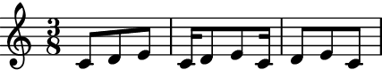
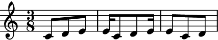
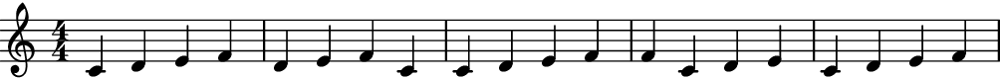
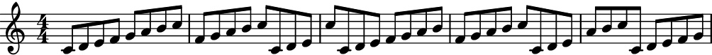
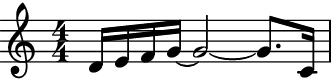
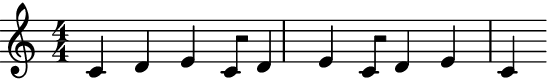

Phaser¶
- class auxjad.Phaser(contents: abjad.score.Container, *, step_size: Union[int, float, str, tuple, abjad.duration.Duration], max_steps: int = 1, forward_bias: float = 1.0, process_on_first_call: bool = False, remove_unterminated_ties: bool = True, omit_time_signatures: bool = False, boundary_depth: Optional[int] = None, maximum_dot_count: Optional[int] = None, rewrite_tuplets: bool = True, prettify_rewrite_meter: bool = True, extract_trivial_tuplets: bool = True, fuse_across_groups_of_beats: bool = True, fuse_quadruple_meter: bool = True, fuse_triple_meter: bool = True)[source]¶
Takes an
abjad.Container(or child class) as input and outputs anabjad.Selectionwith leaves shifted by a fixed amount. Subsequent calls apply further shifts.- Basic usage:
Calling the object will return an
abjad.Selectiongenerated by the phasing process. Each call of the object will shift the contents of the input container by a fixed amount given bystep_size. Note that, by default, the first call outputs the initial container, with subsequent calls phasing it.>>> container = abjad.Container(r"c'4 d'4 e'4 f'4") >>> abjad.show(container)

>>> phaser = auxjad.Phaser(container, ... step_size=(1, 16), ... ) >>> notes = phaser() >>> staff = abjad.Staff(notes) >>> abjad.show(staff)

>>> notes = phaser() >>> staff = abjad.Staff(notes) >>> abjad.show(staff)

The property
current_windowcan be used to access the current window without moving the head forwards.>>> notes = phaser.current_window() >>> staff = abjad.Staff(notes) >>> abjad.show(staff)

process_on_first_call:The very first call will output the input container without processing it. To disable this behaviour and phase on the very first call, initialise the class with the keyword argument
process_on_first_callset toTrue.>>> container = abjad.Container(r"c'4 d'4 e'4 f'4") >>> phaser = auxjad.Phaser(container, ... step_size=(1, 16), ... process_on_first_call=True, ... ) >>> notes = phaser() >>> staff = abjad.Staff(notes) >>> abjad.show(staff)
step_size:The argument
step_sizeis used to step sizes for the phasing process. It takes atupleor anabjad.Duration.>>> container = abjad.Container(r"c'4 d'4 e'4 f'4") >>> phaser = auxjad.Phaser(container, ... step_size=(1, 8), ... ) >>> notes = phaser() >>> staff = abjad.Staff(notes) >>> abjad.show(staff)

>>> notes = phaser() >>> staff = abjad.Staff(notes) >>> abjad.show(staff)
- Using as iterator:
The instances of
Phasercan also be used as an iterator, which can then be used in a for loop to phase through a full cycle. Note that unlike the methodsoutput_n()andoutput_all(), time signatures are added to each window returned by the shuffler. Use the functionauxjad.mutate.remove_repeated_time_signatures()to clean the output when usingPhaserin this way.>>> container = abjad.Container(r"\time 3/4 c'4 d'4 e'4 ~ e'2.") >>> phaser = auxjad.Phaser(container, ... step_size=(1, 4), ... ) >>> staff = abjad.Staff() >>> for window in phaser: ... staff.append(window) >>> auxjad.mutate.remove_repeated_time_signatures(staff) >>> abjad.show(staff)
- Arguments and properties:
This class can take many optional keyword arguments during its creation.
max_stepssets the maximum number of steps that can be applied for a single call, ranging between1and the input value (default is also1); ifmax_stepsis set to a value larger than 1, the number of steps at every call will be randomly chosen.forward_biassets the chance of the process moving forward instead of backwards. It should range from0.0to1.0(default1.0, which means the process can only move forwards. A value of0.5gives 50% chance of moving forwards while a value of0.0will result in the process moving only backwards). By default, when a logical tie is split in between windows, any unterminated ties will be removed; setremove_unterminated_tiestoFalseto disable this behaviour. The propertiesboundary_depth,maximum_dot_count, andrewrite_tupletsare passed as arguments toabjad.Meter.rewrite_meter(), see its documentation for more information. By default, calling the object will first return the original container and subsequent calls will process it; setprocess_on_first_calltoTrueand the looping process will be applied on the very first call. Setting the propertyomit_time_signaturestoTruewill remove all time signatures from the output (Falseby default).>>> container = abjad.Container(r"c'4 d'4 e'4 f'4") >>> phaser = auxjad.Phaser(container, ... step_size=(5, 8), ... max_steps=2, ... forward_bias=0.2, ... remove_unterminated_ties=True, ... omit_time_signatures=True, ... boundary_depth=0, ... maximum_dot_count=1, ... rewrite_tuplets=False, ... process_on_first_call=True, ... ) >>> phaser.step_size 5/8 >>> phaser.max_steps 2 >>> phaser.forward_bias 0.2 >>> phaser.remove_unterminated_ties True >>> phaser.omit_time_signatures True >>> phaser.boundary_depth 0 >>> phaser.maximum_dot_count 1 >>> phaser.rewrite_tuplets False >>> phaser.process_on_first_call True
Use the properties below to change these values after initialisation.
>>> phaser.step_size = (1, 4) >>> phaser.max_steps = 3 >>> phaser.forward_bias = 0.8 >>> phaser.remove_unterminated_ties = False >>> phaser.omit_time_signatures = False >>> phaser.boundary_depth = 1 >>> phaser.maximum_dot_count = 2 >>> phaser.rewrite_tuplets = True >>> phaser.process_on_first_call = False >>> phaser.step_size 1/4 >>> phaser.max_steps 3 >>> phaser.forward_bias 0.8 >>> phaser.remove_unterminated_ties False >>> phaser.omit_time_signatures False >>> phaser.boundary_depth 1 >>> phaser.maximum_dot_count 2 >>> phaser.rewrite_tuplets True >>> phaser.process_on_first_call False
- Setting
forward_biasto0.0: Set
forward_biasto0.0to move backwards instead of forwards (default is1.0).>>> container = abjad.Container(r"\time 3/8 c'8 d'8 e'8") >>> phaser = auxjad.Phaser(container, ... step_size=(1, 16), ... ) >>> notes = phaser.output_n(3) >>> staff = abjad.Staff(notes) >>> abjad.show(staff)
>>> container = abjad.Container(r"\time 3/8 c'8 d'8 e'8") >>> phaser = auxjad.Phaser(container, ... step_size=(1, 16), ... forward_bias=0.0, ... ) >>> notes = phaser.output_n(3) >>> staff = abjad.Staff(notes) >>> abjad.show(staff)
forward_biasbetween0.0and1.0:Setingt
forward_biasto a value in between0.0and1.0will result in random steps being taken forward or backward, according to the bias.>>> container = abjad.Container(r"c'4 d'4 e'4 f'4") >>> phaser = auxjad.Phaser(container, ... step_size=(1, 4), ... forward_bias=0.5, ... ) >>> notes = phaser.output_n(5) >>> staff = abjad.Staff(notes) >>> abjad.show(staff)
max_steps:Setting the keyword argument
max_stepsto a value larger than1will result in a random number of steps (between1andmax_steps) being applied at each call.>>> container = abjad.Container(r"c'8 d'8 e'8 f'8 g'8 a'8 b'8 c''8") >>> phaser = auxjad.Phaser(container, ... step_size=(1, 8), ... max_steps=4, ... ) >>> notes = phaser.output_n(5) >>> staff = abjad.Staff(notes) >>> abjad.show(staff)
len():The function
len()can be used to get the total number of steps that are necessary to return to the initial container.>>> container = abjad.Container(r"c'1") >>> phaser = auxjad.Phaser(container, ... step_size=(1, 16), ... ) >>> len(phaser) 16 >>> container = abjad.Container(r"c'1") >>> phaser = auxjad.Phaser(container, ... step_size=(1, 4), ... ) >>> len(phaser) 4 >>> container = abjad.Container(r"\time 3/4 c'2.") >>> phaser = auxjad.Phaser(container, ... step_size=(1, 2), ... ) >>> len(phaser) 3
output_all():To run through the whole process and output it as a single container, from the initial head position until the process outputs the single last element, use the method
output_all().>>> container = abjad.Container(r"\time 3/4 c'4. d'4.") >>> phaser = auxjad.Phaser(container, ... step_size=(1, 4), ... ) >>> notes = phaser.output_all() >>> staff = abjad.Staff(notes) >>> abjad.show(staff)
cycle_back_to_first:By default,
output_all()will cycle back to the very first window. To stop at the iteration step just before looping back to the initial container, set the keyword argumentcycle_back_to_firsttoFalse.>>> container = abjad.Container(r"\time 3/4 c'4. d'4.") >>> phaser = auxjad.Phaser(container, ... step_size=(1, 4), ... ) >>> notes = phaser.output_all(cycle_back_to_first=False) >>> staff = abjad.Staff(notes) >>> abjad.show(staff)
output_n():To run through just part of the process and output it as a single container, starting from the initial head position, use the method
output_n()and pass the number of iterations as argument.>>> container = abjad.Container(r"c'4 d'4 e'4 f'4") >>> phaser = auxjad.Phaser(container, ... step_size=(1, 32), ... ) >>> notes = phaser.output_n(3) >>> staff = abjad.Staff(notes) >>> abjad.show(staff)
tie_identical_pitches:Both
output_n()andoutput_all()methods can receive the keyword argumenttie_identical_pitches, which will tie identical pitches across iterations of the process when set toTrue(default isFalse). Compare the output below with the example just above.>>> container = abjad.Container(r"c'4 d'4 e'4 f'4") >>> phaser = auxjad.Phaser(container, ... step_size=(1, 32), ... ) >>> notes = phaser.output_n(3, tie_identical_pitches=True) >>> staff = abjad.Staff(notes) >>> abjad.show(staff)
remove_unterminated_ties:All methods that call the phasing process (
__call__(),__next__(),output_all(),output_n()) remove unterminated ties at the end of a selection, which are a result of a logical tie being split at that point. Use the optional keyword argumentremove_unterminated_ties=Falsewhen initialising the phaser to disable this behaviour.>>> container = abjad.Container(r"c'4 d'4 e'4 f'4") >>> phaser = auxjad.Phaser(container, ... step_size=(1, 16), ... process_on_first_call=True, ... remove_unterminated_ties=False, ... ) >>> notes = phaser() >>> staff = abjad.Staff(notes) >>> abjad.show(staff)

- Time signature changes:
This class handles time signature changes.
>>> container = abjad.Container( ... r"\time 2/4 c'2 \time 3/8 d'4. \time 2/4 e'2" ... ) >>> phaser = auxjad.Phaser(container, ... step_size=(1, 8), ... ) >>> notes = phaser.output_n(3) >>> staff = abjad.Staff(notes) >>> abjad.show(staff)
- Indicators:
This class can handle dynamics and articulations too. When a logical tie is split into two during the phasing process, dynamics and articulations are passed on to both of them.
>>> container = abjad.Container(r"c'4-.\p\< d'4--\f e'4->\p f'4") >>> phaser = auxjad.Phaser(container, ... step_size=(1, 8), ... ) >>> staff = abjad.Staff() >>> notes = phaser.output_n(5) >>> staff.append(notes) >>> abjad.show(staff)
- Slurs and hairpins:
Slurs and hairpins are also supported.
>>> container = abjad.Container( ... r"c'2(\p\< d'4. e'8\f f'4\p\> g'2 a'4\pp)" ... ) >>> phaser = auxjad.Phaser(container, ... step_size=(1, 16), ... ) >>> notes = phaser.output_n(5) >>> staff = abjad.Staff(notes) >>> abjad.show(staff)
Tip
The functions
auxjad.mutate.remove_repeated_dynamics()andauxjad.mutate.reposition_clefs()can be used to clean the output and remove repeated dynamics and unnecessary clef changes.Warning
Do note that some elements that span multiple notes (such as ottava indicators, manual beams, etc.) can become problematic when notes containing them are split into two. As a rule of thumb, it is always better to attach those to the music after the fading process has ended.
contents:Use the
contentsproperty to read as well as overwrite the contents of the phaser. Notice that the phasing process will start from the beginning of the new container.>>> container = abjad.Container(r"c'4 d'4 e'4 f'4") >>> phaser = auxjad.Phaser(container, ... step_size=(1, 16), ... ) >>> notes = phaser() >>> staff = abjad.Staff(notes) >>> abjad.show(staff)

>>> notes = phaser() >>> staff = abjad.Staff(notes) >>> abjad.show(staff)

>>> phaser.contents = abjad.Container(r"c'16 d'16 e'16 f'16 g'2.") >>> notes = phaser() >>> staff = abjad.Staff(notes) >>> abjad.show(staff)

>>> notes = phaser() >>> staff = abjad.Staff(notes) >>> abjad.show(staff)
- Tweaking
abjad.Meter.rewrite_meter(): This function uses the default logical tie splitting algorithm from
abjad.Meter.rewrite_meter().>>> container = abjad.Container(r"c'4. d'8 e'2") >>> phaser = auxjad.Phaser(container, ... step_size=(1, 16), ... ) >>> notes = phaser() >>> staff = abjad.Staff(notes) >>> abjad.show(staff)

Set
boundary_depthto a different number to change its behaviour.>>> phaser = auxjad.Phaser(container, ... step_size=(1, 16), ... boundary_depth=1, ... ) >>> notes = phaser() >>> staff = abjad.Staff(notes) >>> abjad.show(staff)

Other arguments available for tweaking the output of
abjad.Meter.rewrite_meter()aremaximum_dot_countandrewrite_tuplets, which work exactly as the identically named arguments ofabjad.Meter.rewrite_meter().This class also accepts the arguments
fuse_across_groups_of_beats,fuse_quadruple_meter,fuse_triple_meter, andextract_trivial_tuplets, which are passed on toauxjad.mutate.prettify_rewrite_meter()(the latter can be disabled by settingprettify_rewrite_metertoFalse). See the documentation of this function for more details on these arguments.omit_time_signatures:To disable time signatures altogether, initialise this class with the keyword argument
omit_time_signaturesset toTrue(default isFalse), or use theomit_time_signaturesproperty after initialisation.>>> container = abjad.Container(r"\time 3/4 c'4 d'4 e'4") >>> phaser = auxjad.Phaser(container, ... step_size=(1, 8), ... omit_time_signatures=True, ... ) >>> notes = phaser.output_n(3) >>> staff = abjad.Staff(notes) >>> abjad.show(staff)

Tip
All methods that return an
abjad.Selectionwill add an initial time signature to it. Theoutput_n()andoutput_all()methods automatically remove repeated time signatures. When joining selections output by multiple method calls, useauxjad.mutate.remove_repeated_time_signatures()on the whole container after fusing the selections to remove any unecessary time signature changes.Warning
This class can handle tuplets, but the output is often quite complex. Although the result will be rhythmically correct, consecutive tuplets are not fused together, and tuplets may be output off-beat. This functionality should be considered experimental.
>>> container = abjad.Container(r"\times 2/3 {c'8 d'8 e'8} d'2.") >>> phaser = auxjad.Phaser(container, ... step_size=(1, 16), ... ) >>> notes = phaser.output_n(3) >>> staff = abjad.Staff(notes) >>> abjad.show(staff)
Methods
__call__()Calls the phaser process for one iteration, returning an
abjad.Selection.__init__(contents, *, step_size[, …])Initialises self.
__iter__()Returns an iterator, allowing instances to be used as iterators.
__len__()__next__()Calls the phaser process for one iteration, returning an
abjad.Selection.__repr__()Returns interpreter representation of
contents.output_all(*[, cycle_back_to_first, …])Goes through the whole phasing process and outputs a single
abjad.Selection.output_n(n, *[, tie_identical_pitches])Goes through
niterations of the phasing process and outputs a singleabjad.Selection.Attributes
Sets the argument
boundary_depthofabjad.Meter.rewrite_meter().The
abjad.Containerto be phased.Read-only property, returns the previously output selection.
Sets the argument
extract_trivial_tupletsofauxjad.mutate.prettify_rewrite_meter().The chance of the window moving forward instead of backwards.
Sets the argument
fuse_across_groups_of_beatsofauxjad.mutate.prettify_rewrite_meter().Sets the argument
fuse_quadruple_meterofauxjad.mutate.prettify_rewrite_meter().Sets the argument
fuse_triple_meterofauxjad.mutate.prettify_rewrite_meter().The maximum number of steps per operation.
Sets the argument
maximum_dot_countofabjad.Meter.rewrite_meter().When
True, all time signatures will be omitted from the output.Read-only property, returns the position of the pivot point.
Used to enable or disable the mutation
auxjad.mutate.prettify_rewrite_meter()(defaultTrue).If
Truethencontentswill be processed in the very first call.When
True, the last element of theabjad.Selectionreturned by a call will have any ties removed.Sets the argument
rewrite_tupletsofabjad.Meter.rewrite_meter().The size of each step when moving the pivot point.
- __call__() → abjad.select.Selection[source]¶
Calls the phaser process for one iteration, returning an
abjad.Selection.
- __init__(contents: abjad.score.Container, *, step_size: Union[int, float, str, tuple, abjad.duration.Duration], max_steps: int = 1, forward_bias: float = 1.0, process_on_first_call: bool = False, remove_unterminated_ties: bool = True, omit_time_signatures: bool = False, boundary_depth: Optional[int] = None, maximum_dot_count: Optional[int] = None, rewrite_tuplets: bool = True, prettify_rewrite_meter: bool = True, extract_trivial_tuplets: bool = True, fuse_across_groups_of_beats: bool = True, fuse_quadruple_meter: bool = True, fuse_triple_meter: bool = True) → None[source]¶
Initialises self.
- __next__() → abjad.select.Selection[source]¶
Calls the phaser process for one iteration, returning an
abjad.Selection.
- property boundary_depth: Optional[int]¶
Sets the argument
boundary_depthofabjad.Meter.rewrite_meter().
- property contents: abjad.score.Container¶
The
abjad.Containerto be phased.
- property current_window: abjad.select.Selection¶
Read-only property, returns the previously output selection.
- property extract_trivial_tuplets: bool¶
Sets the argument
extract_trivial_tupletsofauxjad.mutate.prettify_rewrite_meter().
- property forward_bias: float¶
The chance of the window moving forward instead of backwards. It should range from 0.0 to 1.0 (default 1.0, which means the window can only move forwards. A value of 0.5 gives 50% chance of moving forwards while a value of 0.0 will move the window only backwards).
- property fuse_across_groups_of_beats: bool¶
Sets the argument
fuse_across_groups_of_beatsofauxjad.mutate.prettify_rewrite_meter().
- property fuse_quadruple_meter: bool¶
Sets the argument
fuse_quadruple_meterofauxjad.mutate.prettify_rewrite_meter().
- property fuse_triple_meter: bool¶
Sets the argument
fuse_triple_meterofauxjad.mutate.prettify_rewrite_meter().
- property max_steps: int¶
The maximum number of steps per operation.
- property maximum_dot_count: Optional[int]¶
Sets the argument
maximum_dot_countofabjad.Meter.rewrite_meter().
- property omit_time_signatures: bool¶
When
True, all time signatures will be omitted from the output.
- output_all(*, cycle_back_to_first: bool = True, tie_identical_pitches: bool = False) → abjad.select.Selection[source]¶
Goes through the whole phasing process and outputs a single
abjad.Selection.
- output_n(n: int, *, tie_identical_pitches: bool = False) → abjad.select.Selection[source]¶
Goes through
niterations of the phasing process and outputs a singleabjad.Selection.
- property pivot_point: abjad.duration.Duration¶
Read-only property, returns the position of the pivot point.
- property prettify_rewrite_meter: bool¶
Used to enable or disable the mutation
auxjad.mutate.prettify_rewrite_meter()(defaultTrue).
- property process_on_first_call: bool¶
If
Truethencontentswill be processed in the very first call.
- property remove_unterminated_ties: bool¶
When
True, the last element of theabjad.Selectionreturned by a call will have any ties removed. This means that splitted logical ties will not tie accross multiple calls.
- property rewrite_tuplets: bool¶
Sets the argument
rewrite_tupletsofabjad.Meter.rewrite_meter().
- property step_size: abjad.duration.Duration¶
The size of each step when moving the pivot point.